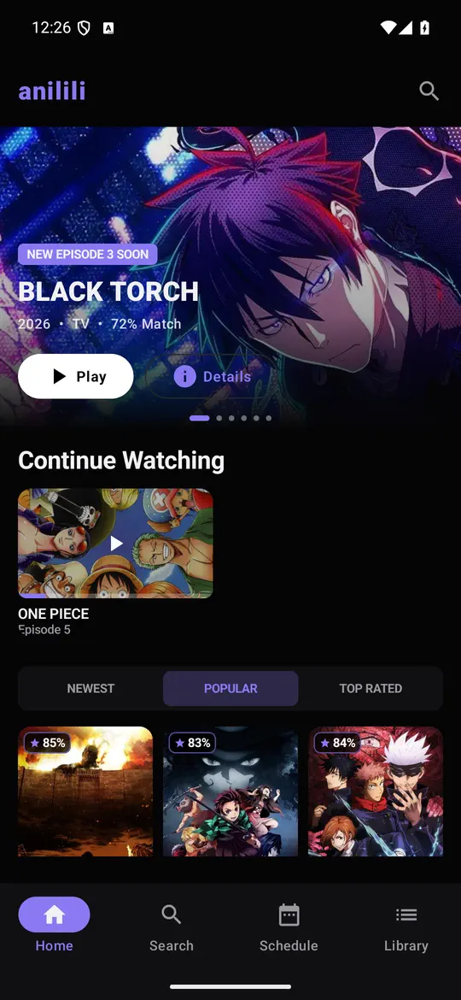
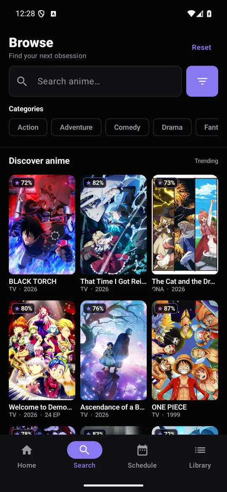
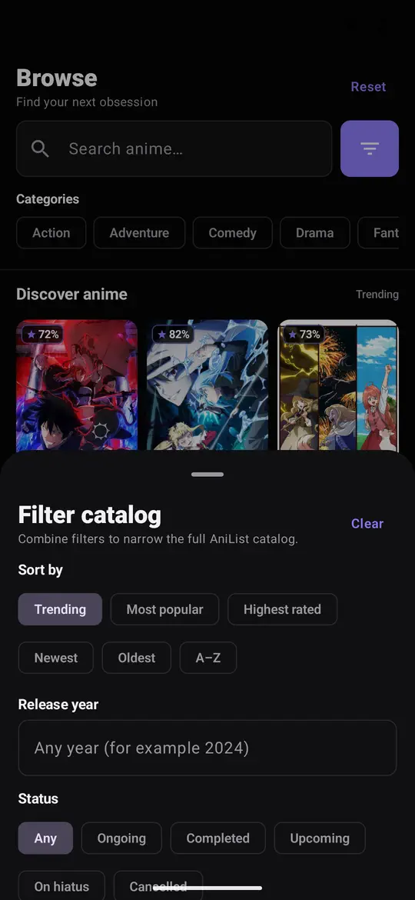
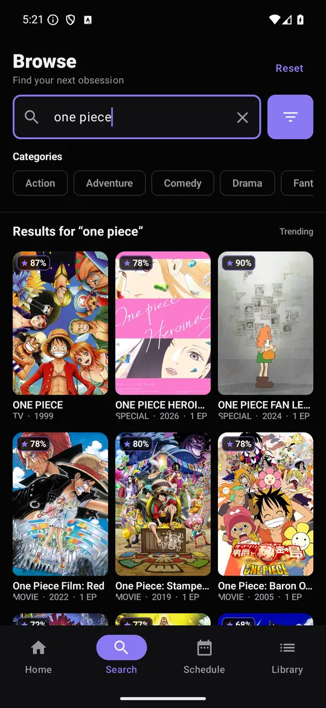
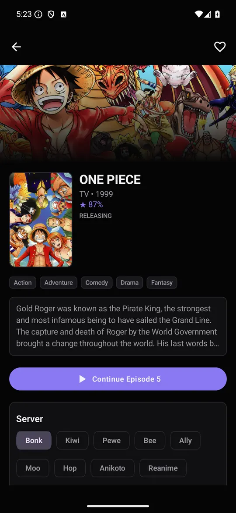
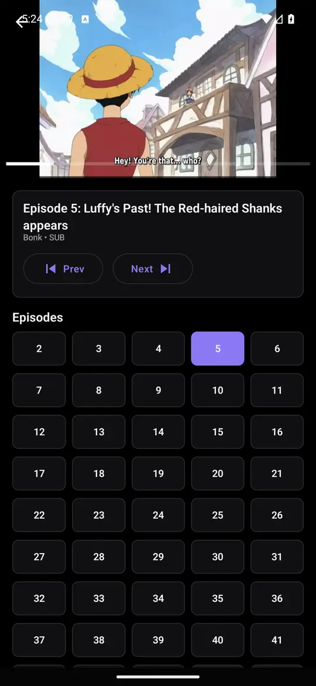

Anime, played
natively.
Anilili is a native Android anime streaming client — Kotlin, Jetpack Compose and Media3, no browser wrapper. Streams resolve from seven providers, sync rides on AniList, and it runs everywhere from a flagship phone to a 2014 Fire TV Stick.
universal · arm64-v8a · armeabi-v7a — Android / Fire OS 5.1+ (API 22)
Features
Everything a streaming site does — as a real app.
No webview shell around a website. Anilili resolves streams on-device and plays them through a native player with proper TV remote and gesture controls.
Native HLS playback
ExoPlayer/Media3 under custom Compose controls: double-tap seek and pause gestures, skip intro, auto-advance to the next episode, live subtitle delay adjustment, and quality selection. Embed-only providers fall back to a hardened WebView player with the same control layout.
Multi-provider streams
Miruro, AniKoto, ReAnime, AniZone, AnimeGG, AniNeko and 2DHive — with automatic fallback when one source doesn't carry an episode.
AniList sync
Log in with AniList for watching / planning / paused / completed lists, ratings, airing notifications, and automatic episode progress sync.
Built for the big screen
D-pad focus navigation, TV-adapted layouts, and remote-friendly player controls on Android TV and Fire TV — down to Fire OS 5 sticks.
Continue watching
Local watch history with exact resume positions, a local watchlist, and Android Watch Next integration — no account required.
Deep search & browse
Trending, popular and newest feeds plus full catalog filters: genre, tag, year, season, status, format, rating, and sort.
Airing schedule
Time-grouped release schedule for yesterday, today and tomorrow, with reminders for shows you follow.
Chromecast
Explicit local ↔ Cast handoff sends compatible streams to your TV while the phone becomes the remote.
Self-updating
The built-in updater checks GitHub releases, picks the right APK for your device's CPU, and installs in place — data intact.
Screenshots
A tour of the app.






Devices
One APK family, every screen.
Anilili supports Android 5.1 and up (API 22) — including the original 32-bit Fire TV Sticks that most modern apps left behind.
Phones & tablets
- Adaptive Compose layouts
- Gesture player controls
- Picture-perfect on any DPI
Android TV
- Full D-pad navigation
- TV-tuned focus & layouts
- Watch Next channel entries
Fire TV
- Fire OS 5 through 8
- 32-bit ARMv7 build for old sticks
- Sideload via Downloader app
Install
Sideload in under a minute.
Grab the APK
On a phone, download it straight from this page. On Fire TV / Android TV, use the Downloader app and fetch the latest release from GitHub.
Allow unknown apps
Android prompts you to allow installs from your browser or Downloader the first time — enable it under Install unknown apps.
Install & play
Open the APK, install, and you're in. Optionally sign in with AniList to bring your lists along.
Stay current automatically
Anilili checks for new releases on its own and installs the right build for your device — no re-sideloading.
Under the hood